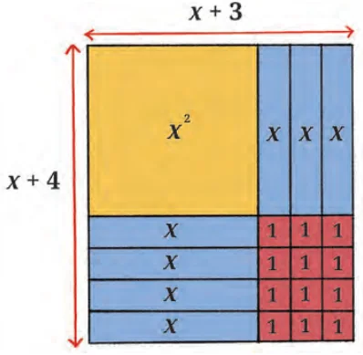
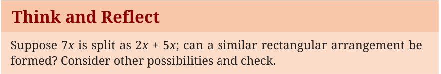
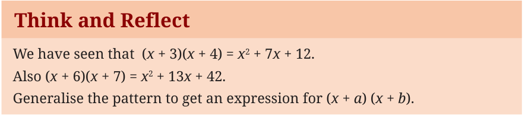
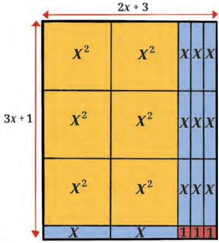

<!DOCTYPE html>
<html lang="en">
<head>
<meta charset="UTF-8">
<meta name="viewport" content="width=device-width,initial-scale=1">
<title>4.5 Factorisation Using Algebra Tiles — Exploring Algebraic Identities</title>
<meta name="description" content="Class 9 Mathematics · Exploring Algebraic Identities · 4.5 Factorisation Using Algebra Tiles">
<link rel="icon" href="data:image/svg+xml,<svg xmlns='http://www.w3.org/2000/svg' viewBox='0 0 100 100'><text y='.9em' font-size='90'>📘</text></svg>">
<link rel="stylesheet" href="../../../assets/book.css">
<link rel="stylesheet" href="https://cdn.jsdelivr.net/npm/katex@0.16.11/dist/katex.min.css" crossorigin="anonymous">
</head>
<body>
<header class="topbar">
<div class="topbar-in">
  <div class="crumb">
    <span class="c1"><a href="../../../index.html">Library</a> · <a href="../../index.html">Class 9 Mathematics</a></span>
    <span class="c2">Exploring Algebraic Identities · 4.5 Factorisation Using Algebra Tiles</span>
  </div>
  <a class="tb-btn" data-nav="prev" href="../../04-exploring-algebraic-identities/06-exercise-4.3/index.html" title="Exercise 4.3">←</a>
  <details class="drawer"><summary class="tb-btn" title="Sections in this chapter">☰</summary>
<div class="drawer-panel"><div class="dh">Exploring Algebraic Identities</div><a href="../01-introduction-4.1/index.html">4.1 Introduction</a><a href="../02-visualising-identities-4.2/index.html">4.2 Visualising Identities</a><a href="../03-exercise-4.1/index.html">Exercise 4.1</a><a href="../04-factorisation-of-algebraic-expressions-using-identities-4.3/index.html">4.3 Factorisation of Algebraic Expressions Using Identities</a><a href="../05-more-identities-4.4/index.html">4.4 More Identities</a><a href="../06-exercise-4.3/index.html">Exercise 4.3</a><a href="../07-factorisation-using-algebra-tiles-4.5/index.html" aria-current="page">4.5 Factorisation Using Algebra Tiles</a><a href="../08-factorisation-without-using-algebra-tiles-4.6/index.html">4.6 Factorisation Without Using Algebra Tiles</a><a href="../09-exercise-4.4/index.html">Exercise 4.4</a><a href="../10-finding-new-identities-4.7/index.html">4.7 Finding New Identities</a><a href="../11-simplifying-rational-expressions-4.8/index.html">4.8 Simplifying Rational Expressions</a><a href="../12-exercise-4.5/index.html">Exercise 4.5</a></div></details>
  <a class="tb-btn" data-nav="next" href="../../04-exploring-algebraic-identities/08-factorisation-without-using-algebra-tiles-4.6/index.html" title="4.6 Factorisation Without Using Algebra Tiles">→</a>
  <button class="tb-btn" data-theme-toggle title="Toggle light / dark" aria-label="Toggle light or dark theme">◐</button>
</div>
<div class="progress"><span style="width:41.8%"></span></div>
</header>
<main class="wrap">
<div class="sec-head">
  <p class="eyebrow"><a href="../index.html">Chapter 4 · Exploring Algebraic Identities</a></p>
  <h1>4.5 Factorisation Using Algebra Tiles</h1>
  <p class="sec-meta">Textbook pages 11–13 · 4 figures</p>
</div>
<article class="prose">
<p>Consider a rectangle with sides \(x + 3\) and \(x + 4\) units. We know that the area of such a rectangle is (x \(+ 3)\) (x \(+ 4)\) sq. units. Using distributivity, we get</p>
<div class="mathblock"><p>(x \(+ 3)(x + 4) = x + 3x + 4x + 12 = x + 7x + 12\).</p></div>
<figure class="fig"><figcaption>Fig. 4.7: Factorisation of x + 7x + 12</figcaption></figure>
<aside class="sidenote"><p>Fig. 4.7 helps to visualise the product of \(x + 3\) and \(x + 4\) using algebra tiles. The expression \(x + 3\) is represented using an x-tile and three unit tiles. Similarly \(x + 4\) is represented using an x-tile and four unit tiles. The product of these two linear factors is shown in the inner rectangle</p><p>comprising the x -tile, the 7 x-tiles, and 12 unit tiles.</p><p>2</p></aside>
<p>Note that the 7x in \(x + 7x + 12\) has been split as \(3x + 4x\). This is represented by the fact that three x-tiles are placed on the right side of</p>
<p>the x -tile and four x-tiles are arranged below it. Also, the 12 unit tiles are arranged in a 3 by 4 array. Once the rectangular arrangement is formed, we observe that the dimensions of the rectangle are \(x + 3\) and \(x + 4\) units respectively.</p>
<figure class="fig wide"><figcaption>Fig. 4.7 helps us to visualise two algebraic identities:</figcaption></figure>
<ul class="qlist">
<li><span class="mk">(i)</span><span class="lt">The linear expressions \(x + 3\) and \(x + 4\) can be multiplied to obtain</span></li>
</ul>
<p>the identity (x \(+ 3)(x + 4) = x + 7x + 12\).</p>
<ul class="qlist">
<li><span class="mk">(ii)</span><span class="lt">Also the expression \(x + 7x + 12\) can be factored into the linear</span></li>
</ul>
<p>factors (x \(+ 3)\) and (x \(+ 4)\), giving the same identity \(x + 7x + 12 =\)</p>
<div class="mathblock"><p>(x \(+ 3)(x + 4)\).</p></div>
<h2 id="s-think-and-reflect">Think and Reflect</h2>
<p>Algebra tiles can be used to represent products and find factors.</p>
<ul class="qlist">
<li><span class="mk">1.</span><span class="lt">Figure out the product of \(x + 2\) and \(x + 3\) using algebra tiles.</span></li>
<li><span class="mk">2.</span><span class="lt">Lay out algebra tiles for \(x + 11x + 30\) in such a way that you will see</span></li>
</ul>
<p>its factors.</p>
<figure class="fig wide"></figure>
<p>Now consider the case where we have a rectangle of sidelengths \(2x + 3\) and \(3x + 1\), as shown in Fig. 4.8. What can you say about its area</p>
<div class="mathblock"><p>\((2x + 3) (3x + 1)\)?</p></div>
<figure class="fig"><figcaption>Fig. 4.8: Using algebra tiles to represent (2x + 3) × (3x + 1)</figcaption></figure>
<p>Fill in the blanks with the appropriate expressions to make the equation true.</p>
<p>(px + a) (qx + b) = (_____)x + (_____)x + _____ .</p>
<p>Also, verify your answer using the distributive property.</p>
</article>
<nav class="pager"><a class="" data-nav="prev" href="../../04-exploring-algebraic-identities/06-exercise-4.3/index.html"><span class="dir">← Previous</span><span class="t">Exercise 4.3</span><span class="ch">Exploring Algebraic Identities</span></a><a class="nx" data-nav="next" href="../../04-exploring-algebraic-identities/08-factorisation-without-using-algebra-tiles-4.6/index.html"><span class="dir">Next →</span><span class="t">4.6 Factorisation Without Using Algebra Tiles</span><span class="ch">Exploring Algebraic Identities</span></a></nav>
</main><footer class="site">Generated from the source textbook PDFs · text, figures and exercises belong to their respective publishers.</footer><script defer src="https://cdn.jsdelivr.net/npm/katex@0.16.11/dist/katex.min.js" crossorigin="anonymous"></script>
<script defer src="https://cdn.jsdelivr.net/npm/katex@0.16.11/dist/contrib/auto-render.min.js" crossorigin="anonymous"
  onload="renderMathInElement(document.body,{delimiters:[
    {left:'\\(',right:'\\)',display:false},
    {left:'$$',right:'$$',display:true},
    {left:'\\[',right:'\\]',display:true}],throwOnError:false,ignoredTags:['script','noscript','style','textarea','pre','code']})"></script>
<script src="../../../assets/book.js"></script>
<script defer src="../../../../assets/search.js"></script>
<script defer src="../../../../assets/screenshot.js"></script>
</body>
</html>
